Web configuration¶
Integrated Navigation Configuration¶
Coordinate System¶
The board coordinate system uses right-front-up (right-hand coordinate system), and the carrier coordinate system is also right-front-up. The positive and negative directions are determined by the right-hand rule. The coordinate system is shown in the figure:

Set INS Mounting Angles¶
Since the coordinate system of the board and the car body may not coincide during use, the SETINSROTATION command needs to be used to set the rotation vector (installation angle, RBV) between the board and the car body. The board is rotated by this rotation vector, which can just coincide with the car body coordinate system.
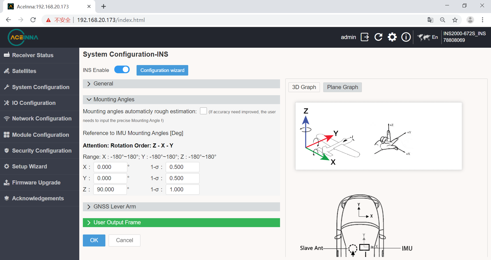When the IMU is placed in the car body as shown in the figure abrove, the IMU is rotated 90° around the Z axis in the positive direction, and the IMU coordinate system is completely coincident with the car body coordinate system.
Set INS Lever Arm¶
Since the center of gravity of the board and antenna may not coincide during use, the offset vector (lever arm) parameter needs to be configured through the SETINSTRANSLATION command.
The following figure is an example to introduce the related configuration of the lever arm.

As can be seen from the above figure, the main antenna is 0.3 meters above the board, 1 meter behind, and 0.3 meters on the left.
For boards that support dual antennas, it is also necessary to configure the main-slave antenna offset vector. That is, the vector from the main antenna to the slave antenna in the coordinate system represented by the currently placed IMU. It can be seen from the above figure that the slave antenna is 1 meter in front of the main antenna (the positive direction of the Y-axis of the IMU), and there is no offset along the X/Z-axis of the IMU.
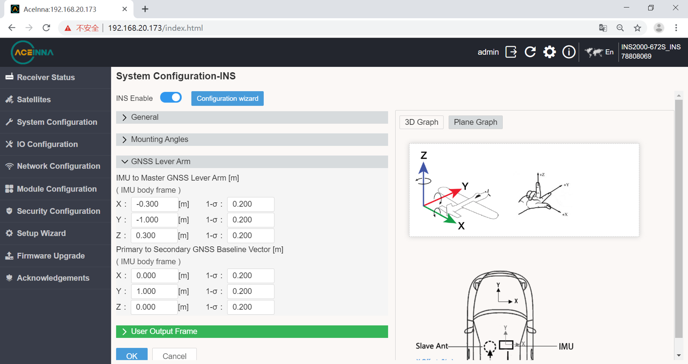The rotation vector of the main-slave antenna and the vehicle body or IMU will be automatically calculated according to the lever arm parameters configured here.
RTK Configuration¶
The first time you enter the webpage, there will be a base station and mobile station configuration guide. If you enter it for the second time or more, you can select the gear in the upper right corner to export the interface.
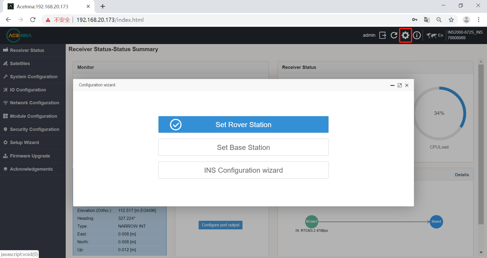Set up base station¶
The first step is to configure the base station location.
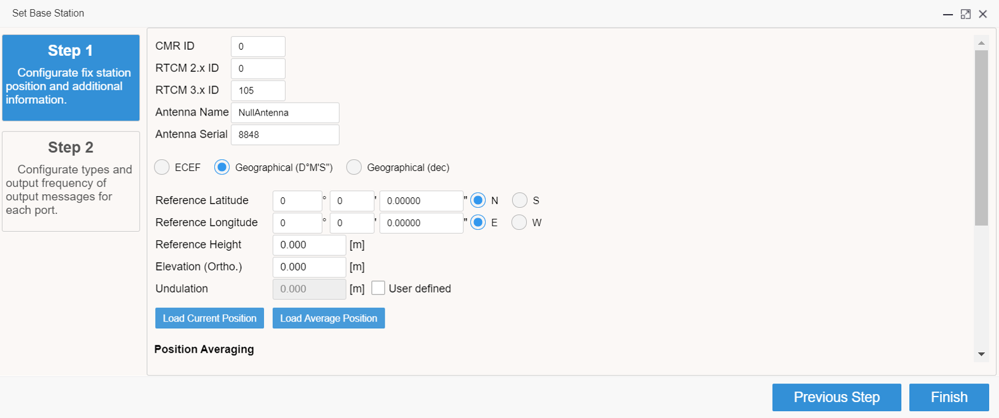The second step is to configure the output protocol and port.
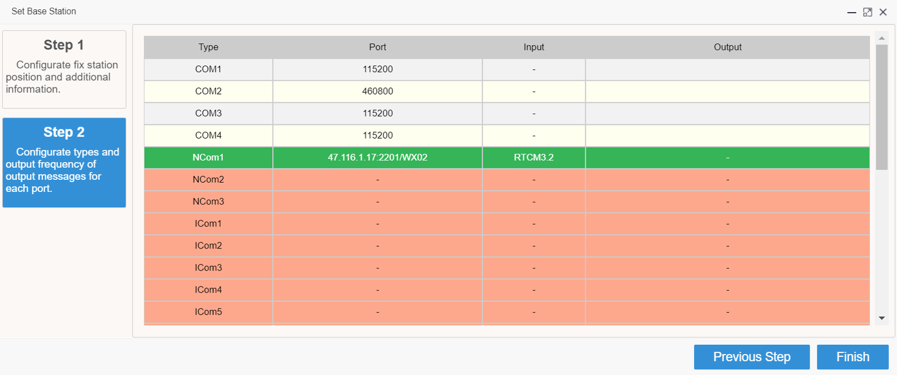COM port configuration.
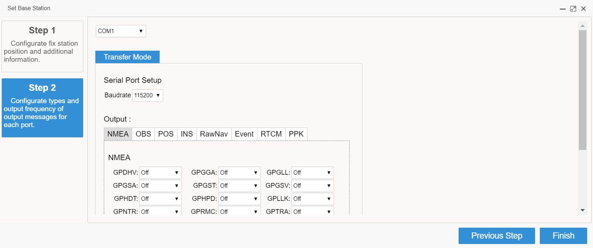ICOM port configuration.
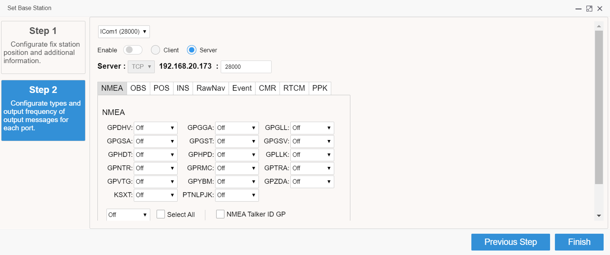Set up rover station¶
The serial port transmits RTCM data, and the rover station does not need to be configured. The RTCM input will be displayed on the web page to verify the RTCM differential data input (the baud rate can be changed as needed).
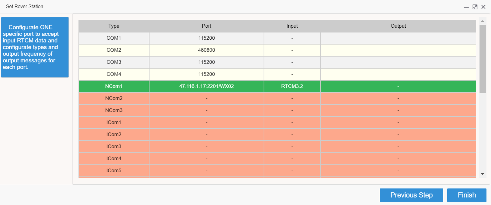ICOM rover station configuration.
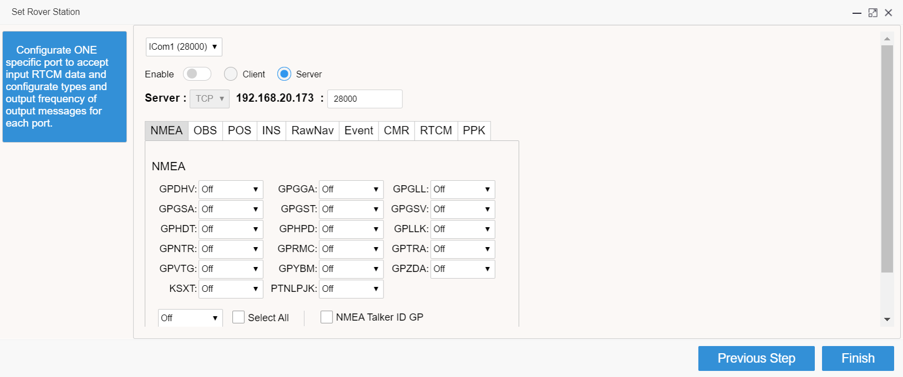Note
To enter the port number of the IP of the base station. Base station IP and mobile station IP are in the same network segment.
Ntrip Rover Station Configuration¶
Let’s now configure the commonly used CORS station technology, taking Aceinna’s Ntrip as an example.
This RTK mobile station configuration requires that the INS2000 receiver can be connected to the Internet.
There are two ways for this product to connect to the Internet:
1 Connect the product to a network device such as a mobile router with a network cable.
Enter the IO configuration interface.
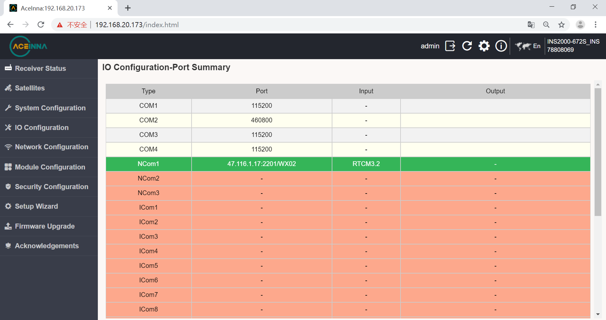Network cable NCOM1 configuration interface.
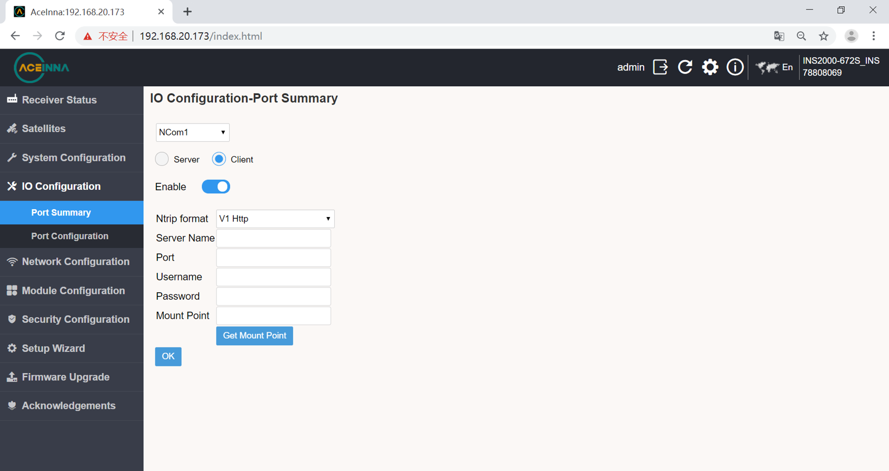
2 Connect the 4G antenna and insert the 4G card to configure as follows.
4G configuration select COM1 port, click on DTU option.
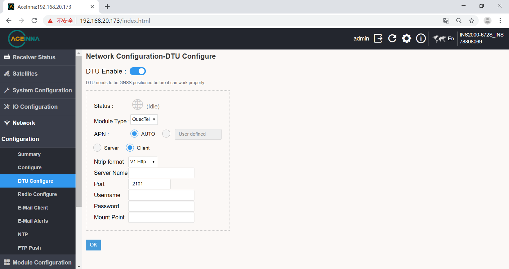
Simple Output Configuration¶
Enter the IO configuration interface from the web page to select different ports for output configuration.
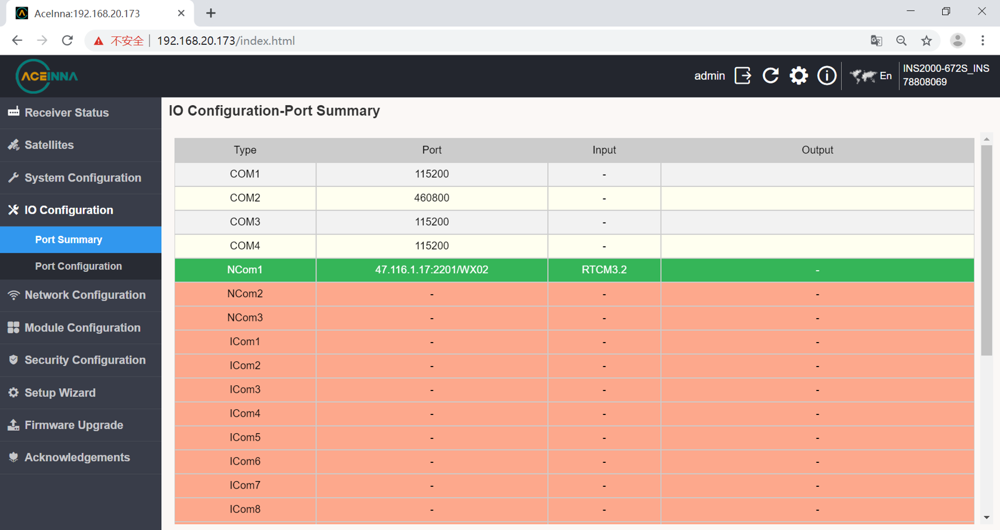Choose a different sentence after entering the port.
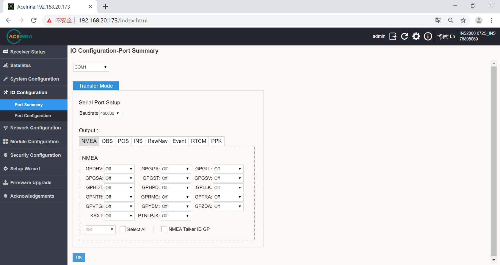